Tema 3
GRUNDLÆGGENDE UX/UI
I tema 3 designede vi og lavede vores egen hjemmeside. Vi lærte om User Experience design(UX) og User Interface design. Og vi fik den grundlæggende forståelse for interaktionen mellem brugere og brugergrænseflader. Derudover lærte vi om forskellige research metoder f.eks hvordan man laver desk research, interview, survey of observation research. Vi lærte også om de forskellige tests man kan lave på sit design og produkter. Og vi lærte hvordan man laver prototyper for websites i Figma.
03.01.01-Emnesite
I tema 3 var vores opgave at lave og designe vores egen hjemmeside. Vi kunne selv vælge, hvad vores website handlede om. Men jeg valgte at lave en vegansk spiseguide til København. I denne opgave lærte vi at udvikle vores idé og at lave research og teste vores idéer. Vi skulle dokumentere vores proces og til sidst lavede vi en præsentation af vores website.
Idéen
Jeg besluttede mig for at lave en vegansk spiseguide til København fordi jeg er en veganer. Men formålet med mit website er at gøre det nemmere for veganere at finde vegansk mad i København. Derfor er min målgruppe veganer og primært veganske turister i København.
Research og idéudvikling
Desk research og inspiration:
Jeg fik inspiration fra Happycow og Veggiesabroad. Men de er veganske spiseguide websites. Veggiesabroad er en vegansk rejseblogside og Happycow ligner Tripadvisor.
Interview:
Jeg interviewede min islandske veninde som er en veganer men hun var også lige flyttet til København. Jeg spurgte hende bl.a. om hvordan hun laver sin research som veganer før hun rejser. De indsigter jeg fik fra dette interview var at: research er vigtig før du rejser når du er veganer. Og at Happycow og facebook grupper er meget hjælpsomme og at det er godt at vide hvor mange og hvilken veganske retter er på menuen.
Observation:
Jeg observerede min veninde som jeg interviewede før. Jeg spurgte hende om at finde en italiensk restaurant på Happycow. De indsigter jeg fik fra min observation var at hun tjekkede altid hjemmesiderne og menuen og placering på google maps. Og så at det er godt at have forskellige kategorier f.eks. café, fastfood og så videre, og at det er vigtigt at oplyse hvor mange veganske retter er på menuen.
Crazy 8s:
Jeg synes at det va meget nyttig at lave crazy 8s. Jeg kunne godt lide at lave crazy 8s fordi jeg kunne ,,let loose” og ikke tænke for meget når jeg testede nye idéer. Jeg testede 8 forskellige idéer på min forside.
 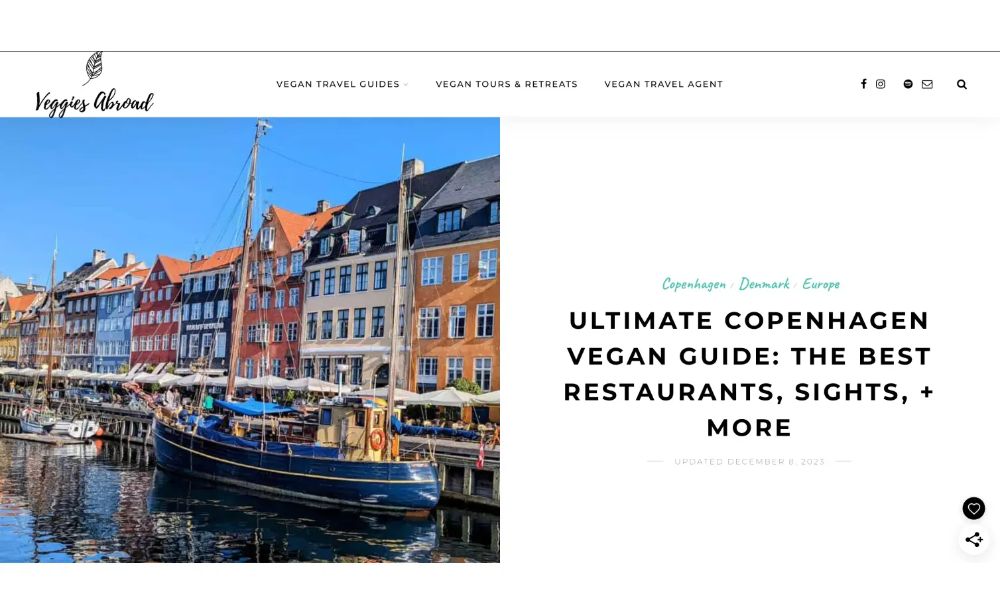
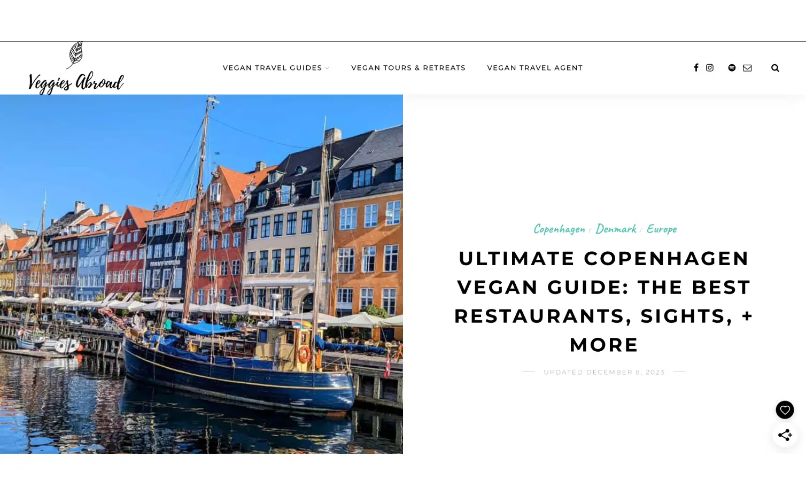
 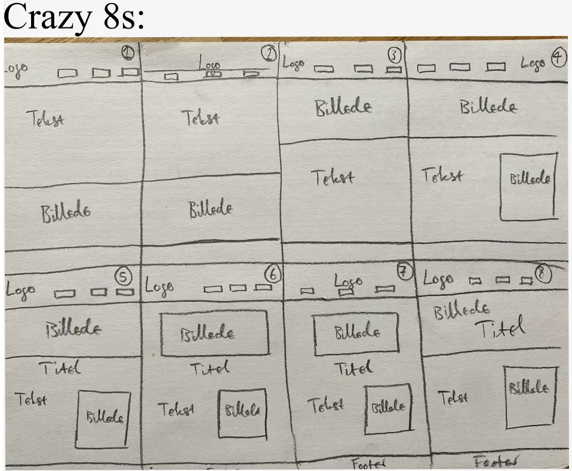
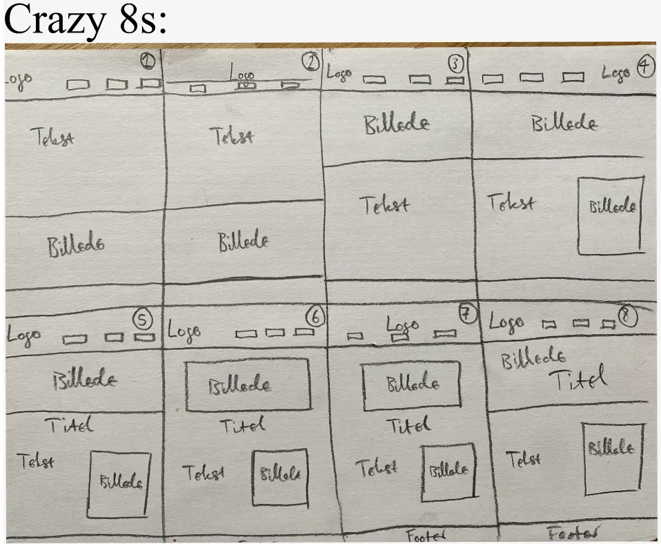
Design, wireframes og prototype
De værdiord jeg valgte at bruge for mit design er venlig, afslappet og organisk. Jeg valgte at bruge grønne farver i mit design fordi grøn farve associeres med planter og også veganisme.
 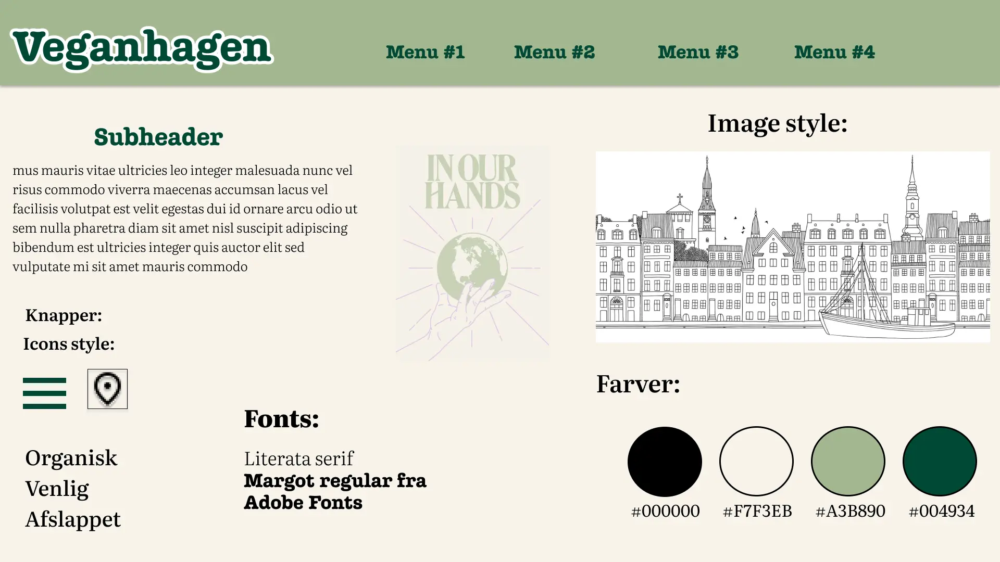
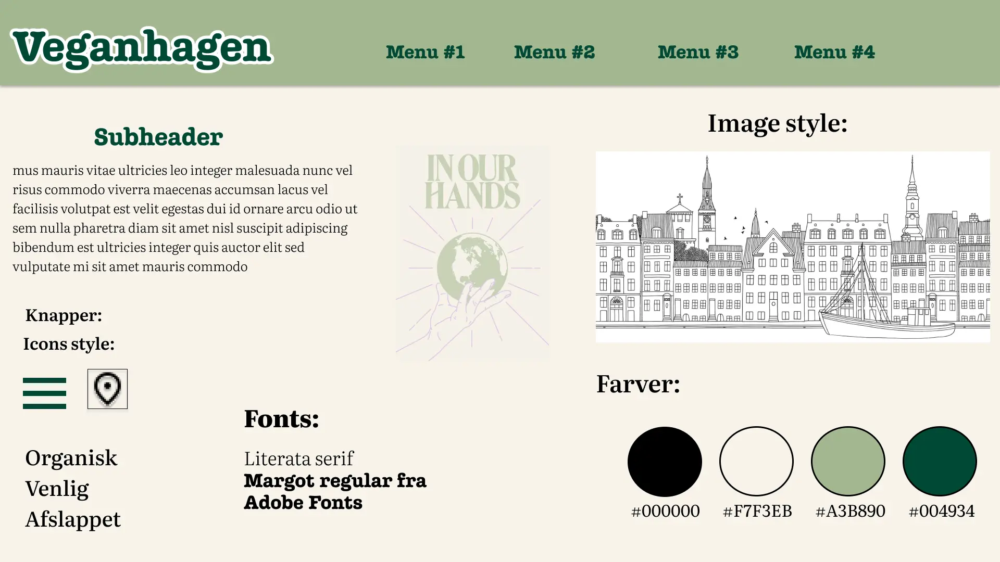
 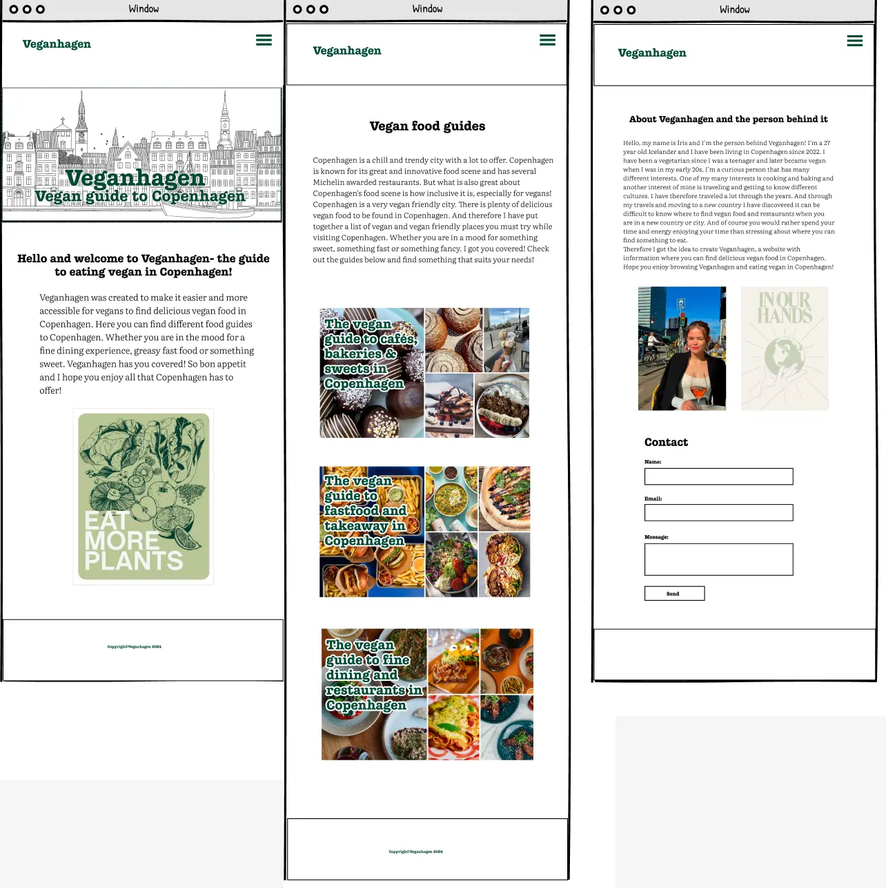
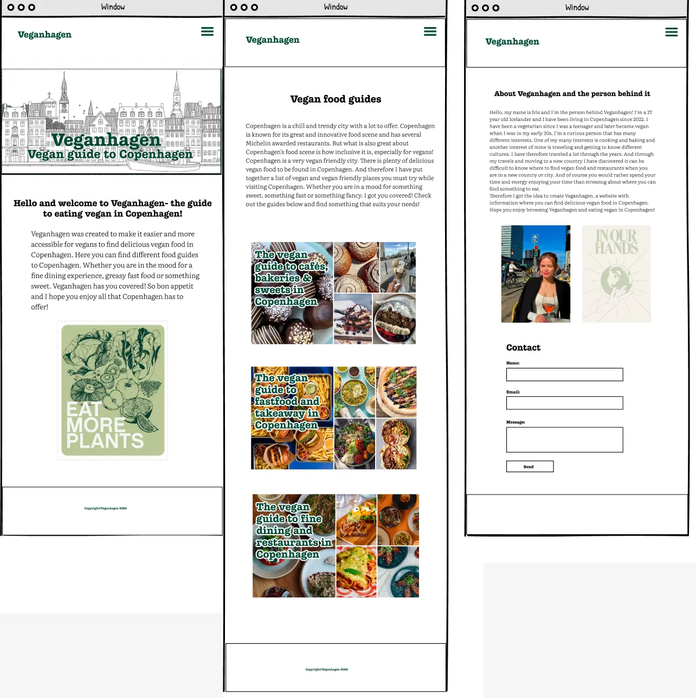


5 sekunder test

Jeg lavede en 5 sekunder test på min forside, hvor jeg spurgte 4 mennesker disse spørgsmål: Hvad er formålet med siden?
Hvilket element husker du bedst?
Beskriv siden med et ord?
Passer farvene sammen og passer stilen til emnet?
Konklusionen var de syntes at formålet var klart og at websiten var nyttig/tilgængelig og imødekommende og at farverne passer sammen. Men nogle syntes at jeg skulle have ramme omkring coverbilleden.
Lighthouse test

Kodning
Jeg syntes det var meget interessant at kode min website. Og i dette tema lærte jeg at kode formular og også at lave en dropdown menu.

 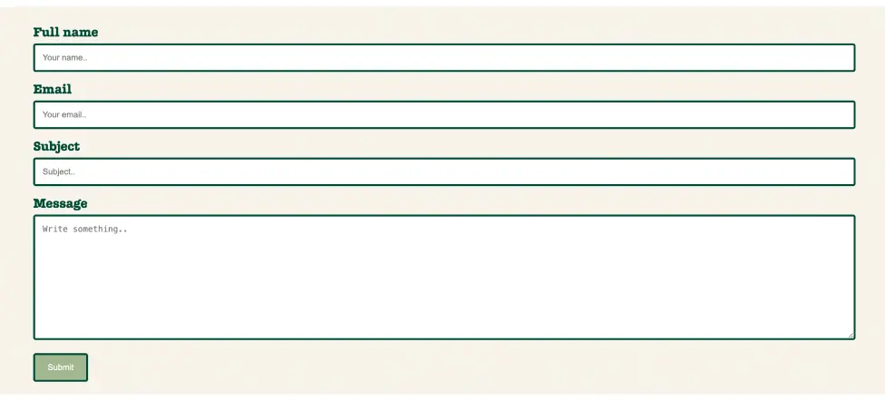
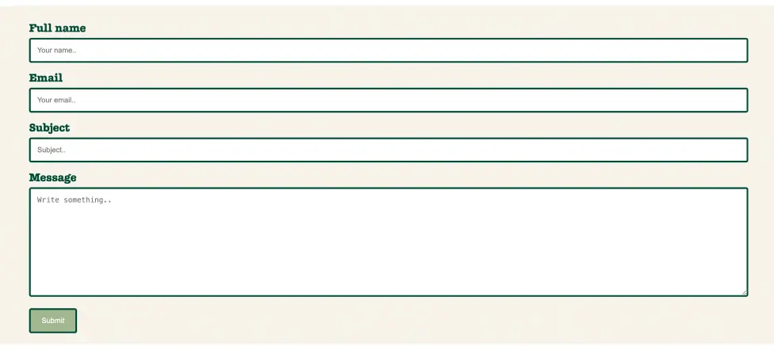


Min website
Jeg var tilfreds med min website og her er nogle skærmbilleder af mit website.

 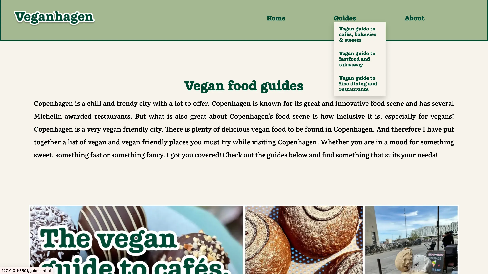
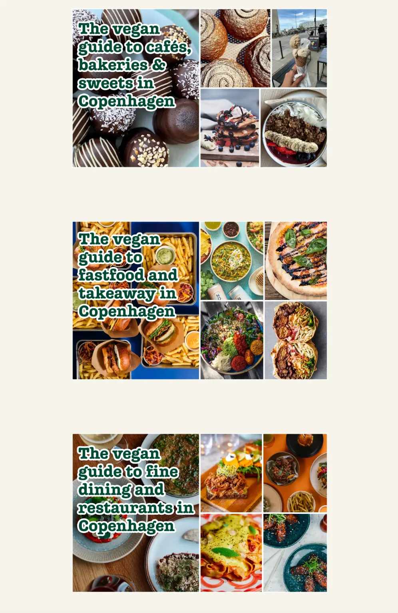
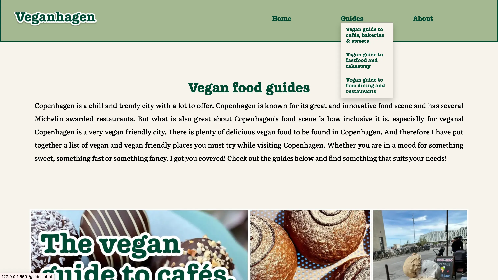
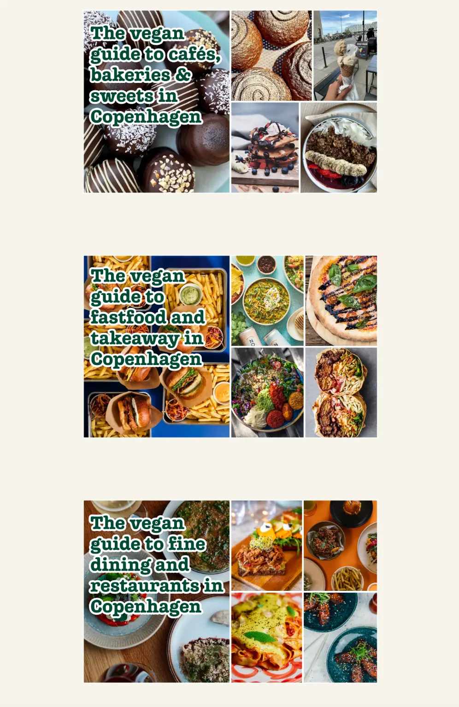
 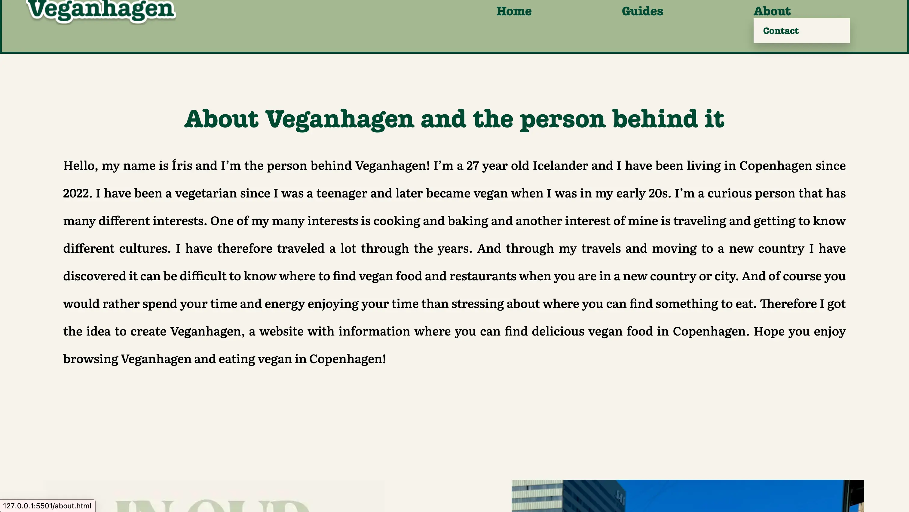
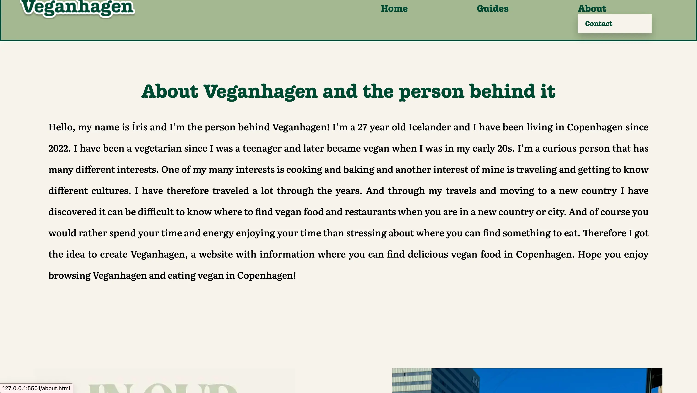
Præsentation

Jeg fik god feedback fra min præsentation, og min præsentation var organiseret. Og det var godt, hvordan jeg dokumenterede og fortalte om mit proces. Her er nogle skærmbilleder af min præsentation.
Konklusion
Jeg syntes det var meget interessant at lave min egen website. Jeg lærte mange nye ting i dette tema. Jeg lærte f.eks. hvordan man laver formular. Og jeg var meget tilfreds med min website.